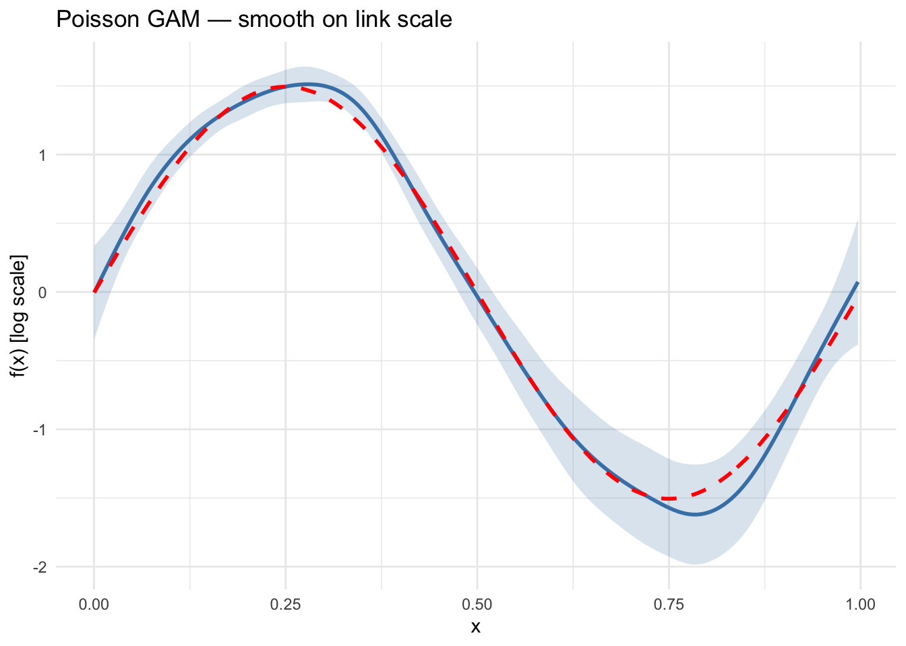
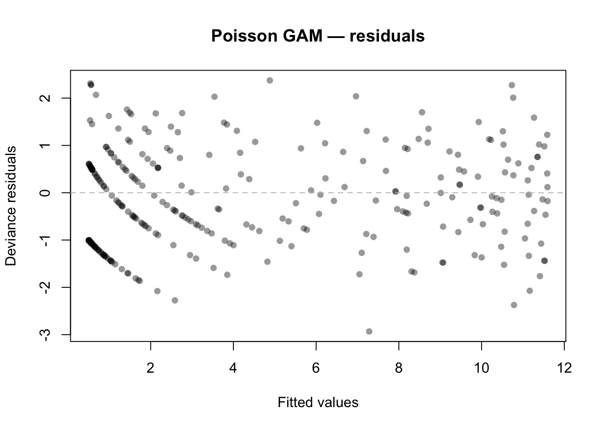
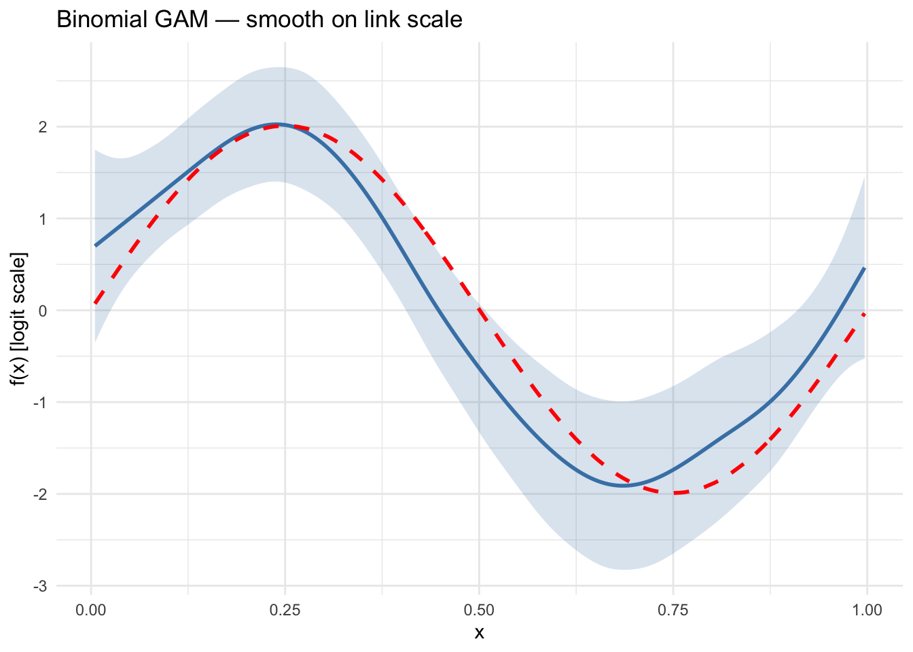
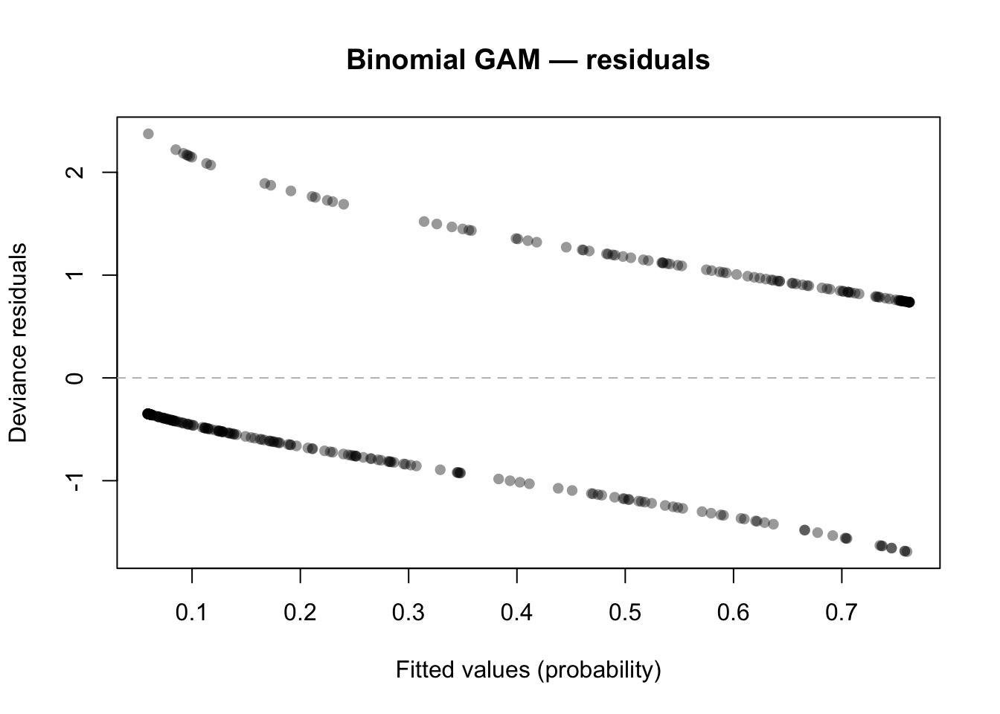
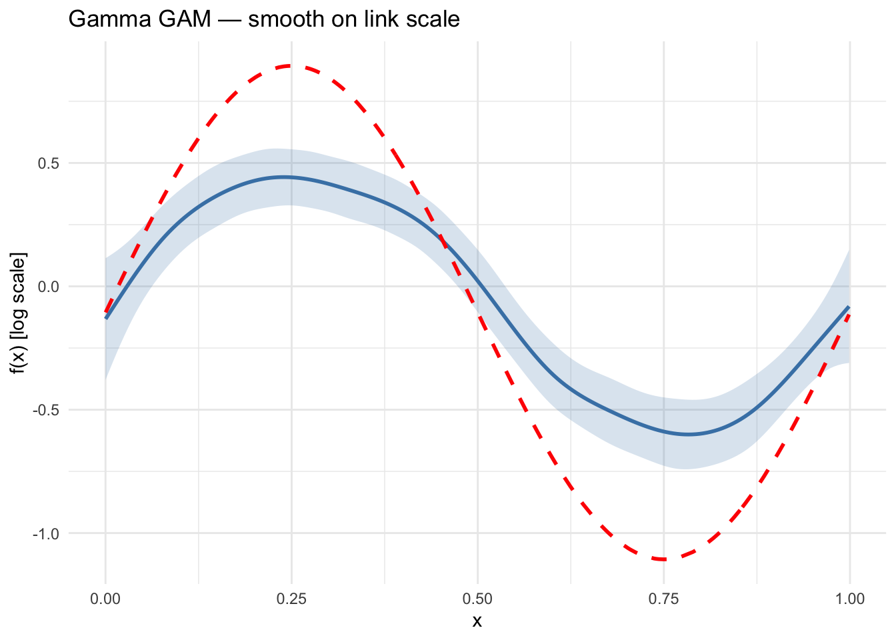
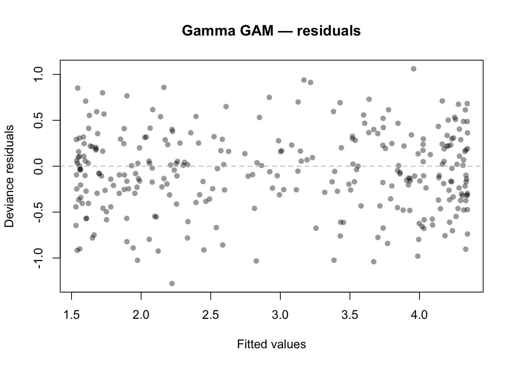

library(mgcv)Loading required package: nlmeThis is mgcv 1.9-3. For overview type 'help("mgcv-package")'.library(gratia)
library(ggplot2)GAMs are not limited to Gaussian responses. By specifying a family (distribution) and link function, we can model count data, binary outcomes, positive continuous data, and more. The general model is:
\[ g(\mu_i) = \beta_0 + f_1(x_{1i}) + \cdots + f_p(x_{pi}), \quad y_i \sim \text{Family}(\mu_i, \phi) \]
This vignette demonstrates three common non-Gaussian families:
| Family | Link | Response type | Example |
|---|---|---|---|
| Poisson | log | Counts | Species counts, event rates |
| Binomial | logit | Binary / proportions | Presence–absence, disease status |
| Gamma | inverse (or log) | Positive continuous | Waiting times, claim sizes |
library(mgcv)Loading required package: nlmeThis is mgcv 1.9-3. For overview type 'help("mgcv-package")'.library(gratia)
library(ggplot2)We load counts generated from a Poisson distribution with a smooth log-rate:
\[ y_i \sim \text{Poisson}(\mu_i), \quad \log(\mu_i) = 1 + 1.5 \sin(2\pi x_i) \]
dat_pois <- read.csv("../data_poisson.csv")
x <- dat_pois$x
y_pois <- dat_pois$y
n <- nrow(dat_pois)
eta <- 1.0 + 1.5 * sin(2 * pi * x)
df_pois <- data.frame(x = x, y = y_pois)m_pois <- gam(y ~ s(x, k = 15, bs = "cr"), data = df_pois,
family = poisson(link = "log"), method = "REML")
summary(m_pois)
Family: poisson
Link function: log
Formula:
y ~ s(x, k = 15, bs = "cr")
Parametric coefficients:
Estimate Std. Error z value Pr(>|z|)
(Intercept) 0.93959 0.04685 20.06 <2e-16 ***
---
Signif. codes: 0 '***' 0.001 '**' 0.01 '*' 0.05 '.' 0.1 ' ' 1
Approximate significance of smooth terms:
edf Ref.df Chi.sq p-value
s(x) 7.995 9.613 719.9 <2e-16 ***
---
Signif. codes: 0 '***' 0.001 '**' 0.01 '*' 0.05 '.' 0.1 ' ' 1
R-sq.(adj) = 0.764 Deviance explained = 76.4%
-REML = 566.91 Scale est. = 1 n = 300se_pois <- smooth_estimates(m_pois, n = 200)
ggplot(se_pois, aes(x = x, y = .estimate)) +
geom_ribbon(aes(ymin = .estimate - 2 * .se, ymax = .estimate + 2 * .se),
alpha = 0.2, fill = "steelblue") +
geom_line(linewidth = 1, colour = "steelblue") +
geom_line(data = data.frame(x = x, y = eta - mean(eta)),
aes(x = x, y = y), linetype = "dashed", linewidth = 1, colour = "red") +
labs(x = "x", y = "f(x) [log scale]", title = "Poisson GAM — smooth on link scale") +
theme_minimal()
resid_pois <- residuals(m_pois, type = "deviance")
plot(fitted(m_pois), resid_pois,
xlab = "Fitted values", ylab = "Deviance residuals",
main = "Poisson GAM — residuals", pch = 16, col = adjustcolor("black", 0.4))
abline(h = 0, lty = 2, col = "grey")
We load binary outcomes generated from a logistic model:
\[ y_i \sim \text{Bernoulli}(p_i), \quad \text{logit}(p_i) = -0.5 + 2\sin(2\pi x_i) \]
dat_binom <- read.csv("../data_binomial.csv")
x_bin <- dat_binom$x
y_bin <- dat_binom$y
eta_bin <- -0.5 + 2.0 * sin(2 * pi * x_bin)
df_bin <- data.frame(x = x_bin, y = y_bin)m_bin <- gam(y ~ s(x, k = 15, bs = "cr"), data = df_bin,
family = binomial(link = "logit"), method = "REML")
summary(m_bin)
Family: binomial
Link function: logit
Formula:
y ~ s(x, k = 15, bs = "cr")
Parametric coefficients:
Estimate Std. Error z value Pr(>|z|)
(Intercept) -0.8588 0.1599 -5.371 7.83e-08 ***
---
Signif. codes: 0 '***' 0.001 '**' 0.01 '*' 0.05 '.' 0.1 ' ' 1
Approximate significance of smooth terms:
edf Ref.df Chi.sq p-value
s(x) 5.034 6.217 69.7 <2e-16 ***
---
Signif. codes: 0 '***' 0.001 '**' 0.01 '*' 0.05 '.' 0.1 ' ' 1
R-sq.(adj) = 0.295 Deviance explained = 25.5%
-REML = 153.02 Scale est. = 1 n = 300se_bin <- smooth_estimates(m_bin, n = 200)
ggplot(se_bin, aes(x = x, y = .estimate)) +
geom_ribbon(aes(ymin = .estimate - 2 * .se, ymax = .estimate + 2 * .se),
alpha = 0.2, fill = "steelblue") +
geom_line(linewidth = 1, colour = "steelblue") +
geom_line(data = data.frame(x = x_bin, y = eta_bin - mean(eta_bin)),
aes(x = x, y = y), linetype = "dashed", linewidth = 1, colour = "red") +
labs(x = "x", y = "f(x) [logit scale]", title = "Binomial GAM — smooth on link scale") +
theme_minimal()
resid_bin <- residuals(m_bin, type = "deviance")
plot(fitted(m_bin), resid_bin,
xlab = "Fitted values (probability)", ylab = "Deviance residuals",
main = "Binomial GAM — residuals", pch = 16, col = adjustcolor("black", 0.4))
abline(h = 0, lty = 2, col = "grey")
We load positive continuous data generated from a Gamma distribution with a smooth log-mean:
\[ y_i \sim \text{Gamma}(\text{shape}, \text{scale}_i), \quad \log(\mu_i) = 1 + \sin(2\pi x_i) \]
dat_gamma <- read.csv("../data_gamma.csv")
x_gam <- dat_gamma$x
y_gam <- dat_gamma$y
eta_gam <- 1.0 + sin(2 * pi * x_gam)
df_gam <- data.frame(x = x_gam, y = y_gam)We use Gamma with log link (more commonly used in practice than the canonical inverse link):
m_gam <- gam(y ~ s(x, k = 15, bs = "cr"), data = df_gam,
family = Gamma(link = "log"), method = "REML")
summary(m_gam)
Family: Gamma
Link function: log
Formula:
y ~ s(x, k = 15, bs = "cr")
Parametric coefficients:
Estimate Std. Error t value Pr(>|t|)
(Intercept) 1.02615 0.02457 41.76 <2e-16 ***
---
Signif. codes: 0 '***' 0.001 '**' 0.01 '*' 0.05 '.' 0.1 ' ' 1
Approximate significance of smooth terms:
edf Ref.df F p-value
s(x) 6.177 7.594 30.27 <2e-16 ***
---
Signif. codes: 0 '***' 0.001 '**' 0.01 '*' 0.05 '.' 0.1 ' ' 1
R-sq.(adj) = 0.362 Deviance explained = 41.5%
-REML = 473.96 Scale est. = 0.18114 n = 300se_gam <- smooth_estimates(m_gam, n = 200)
ggplot(se_gam, aes(x = x, y = .estimate)) +
geom_ribbon(aes(ymin = .estimate - 2 * .se, ymax = .estimate + 2 * .se),
alpha = 0.2, fill = "steelblue") +
geom_line(linewidth = 1, colour = "steelblue") +
geom_line(data = data.frame(x = x_gam, y = eta_gam - mean(eta_gam)),
aes(x = x, y = y), linetype = "dashed", linewidth = 1, colour = "red") +
labs(x = "x", y = "f(x) [log scale]", title = "Gamma GAM — smooth on link scale") +
theme_minimal()
resid_gam <- residuals(m_gam, type = "deviance")
plot(fitted(m_gam), resid_gam,
xlab = "Fitted values", ylab = "Deviance residuals",
main = "Gamma GAM — residuals", pch = 16, col = adjustcolor("black", 0.4))
abline(h = 0, lty = 2, col = "grey")
results <- data.frame(
Family = c("Poisson", "Binomial", "Gamma"),
EDF = c(
round(sum(pen.edf(m_pois)), 2),
round(sum(pen.edf(m_bin)), 2),
round(sum(pen.edf(m_gam)), 2)
),
Dev_Explained = c(
round(summary(m_pois)$dev.expl * 100, 1),
round(summary(m_bin)$dev.expl * 100, 1),
round(summary(m_gam)$dev.expl * 100, 1)
),
Scale = c(
round(summary(m_pois)$scale, 4),
round(summary(m_bin)$scale, 4),
round(summary(m_gam)$scale, 4)
)
)
print(results) Family EDF Dev_Explained Scale
1 Poisson 8.00 76.4 1.0000
2 Binomial 5.03 25.5 1.0000
3 Gamma 6.18 41.5 0.1811In this vignette we:
Each family uses a different link function to map the linear predictor to the mean of the response distribution, but the smooth estimation machinery is the same.